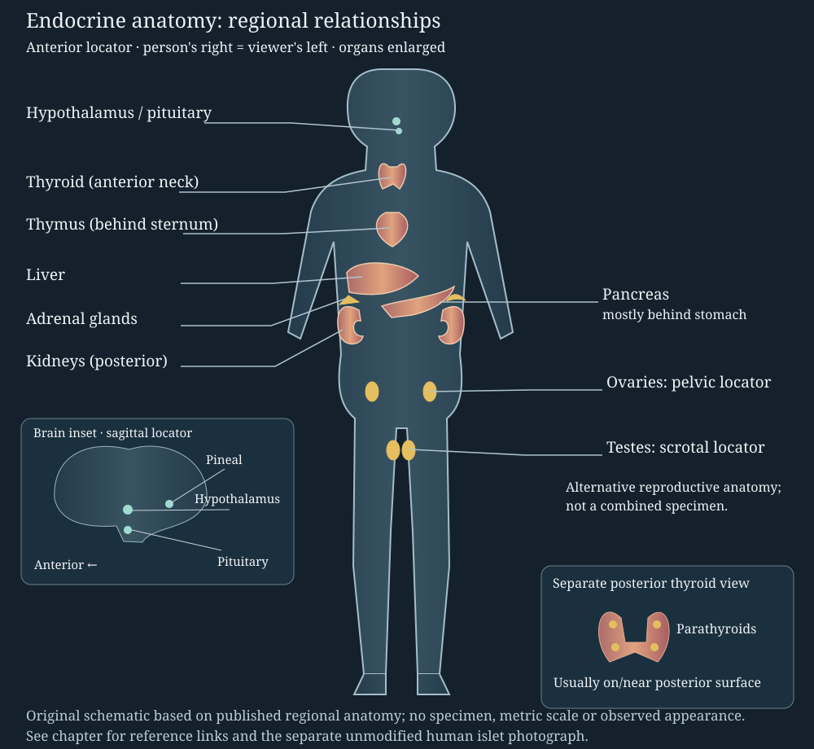
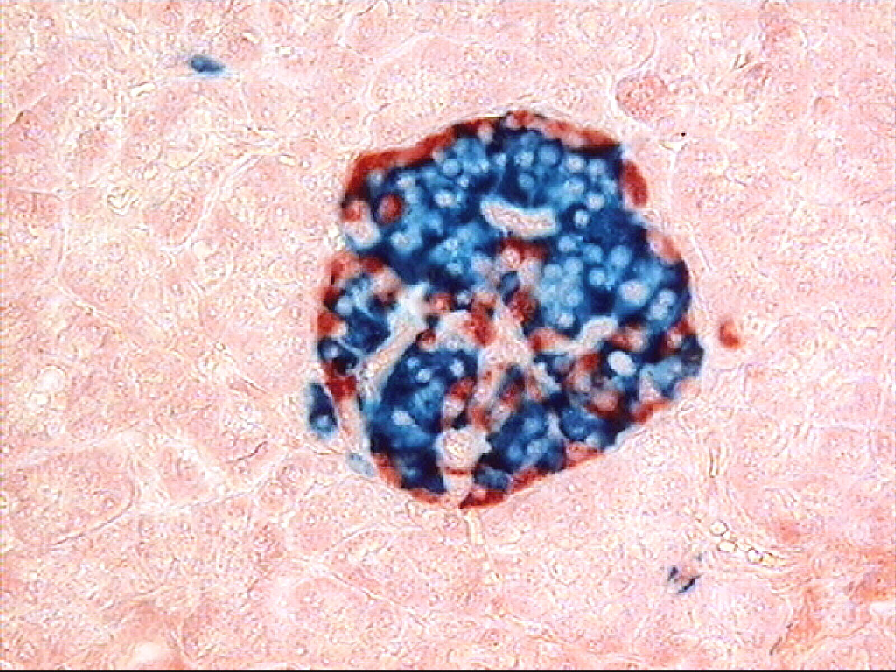

09. Endocrine signaling and glucose homeostasis
A person absorbs carbohydrate after dinner, then receives no further food overnight. The brain continues to need fuel in both periods. Why does glucose usually rise only transiently after the meal, and why does it remain available hours after intestinal absorption has subsided? A satisfactory answer must account for the glucose molecules, the organs that exchange them, and the signals that change those exchanges. Confusing a signal with the substance it regulates makes this ordinary transition impossible to explain correctly.
The lecture spine is official NPTEL L20, Structure & Functions of Endocrine Glands, and L21, Glucose Homeostasis, Type I and Type II Diabetes. Both complete caption texts were read. A separate bounded source audit inspected six contact sheets containing 102 sampled stills and eight individual frames; this chapter uses that report without claiming continuous video/audio viewing or author reinspection of those frames. The gland survey follows L20 before developing L21's glucose case. Research-supported qualifications, original mechanism diagrams and synthetic calculations are identified locally. Evidence and access limits.
9.1 Hormones change the behavior of target cells L20 02:07
A hormone is a chemical signal released by a cell that changes the activity of other cells bearing the appropriate recognition machinery. In endocrine signaling, the signal enters the circulation and can reach distant targets. An endocrine gland is called ductless because it releases its hormonal product toward the interstitial fluid and blood rather than sending it down an excretory duct. In contrast, an exocrine gland releases material through a duct toward an epithelial surface or a lumen such as the intestine. The pancreas combines both organizations in one organ.
A target cell has a receptor and a downstream apparatus capable of responding to the signal. A receptor is a molecule, usually a protein, that recognizes a ligand; the ligand is the molecule that binds it. Blood distributes a hormone widely, but distribution alone does not specify response. Two cells exposed to the same hormone can differ in receptor abundance, intracellular signaling proteins, available enzymes and physiological task. Thus a single circulating instruction can favor glycogen storage in one tissue while suppressing fuel release in another. OpenStax §17.2 supplies the introductory hormone/receptor distinction.
Signal transduction means conversion of receptor binding into changes within a cell. For a peptide such as insulin, the receptor spans the plasma membrane: recognition occurs outside, while intracellular events alter protein activity and traffic. The insulin molecule need not enter the cytoplasm to initiate these effects. Steroid hormones, derived from cholesterol, commonly act through intracellular receptors that regulate gene expression. These are useful broad architectures, rather than a rule that every chemical class uses only one pathway. A change in gene expression means a change in the production of RNA and subsequently, where applicable, protein; it does not require a mutation of the DNA sequence.
Hormonal action has several timescales. Binding and modification of existing proteins can change an ongoing process rapidly, whereas changing protein abundance or organ growth can require much longer. Removal of a hormone, receptor inactivation and opposing pathways can terminate a response. Growth and reproduction provide long-lasting consequences, but “slow” and “irreversible” are not definitions of endocrine signaling. Our meal case requires a reversible change in rates: uptake and storage should rise while nutrients are entering, then relax when the input changes. A permanently locked meal response would be a regulatory failure.
Separate an instruction from a material flux
A flux in the accounting used here is an amount transferred per unit time between named pools. Hormone secretion is a material flux of hormone. It is not itself a glucose flux. Insulin can change the number of glucose transporters at a membrane, and thereby change glucose transfer, without contributing glucose molecules to that transfer. Similarly, glucagon can stimulate enzymes that mobilize a liver store without itself being converted into the released glucose. Keeping these two diagrams separate—one for signals and one for material—prevents counting insulin as an extra source of blood glucose or drawing it as a glucose-carrying vehicle.
Negative feedback occurs when a response reduces the disturbance that elicited it. After an increase in glucose availability, a coordinated increase in uptake and storage and reduction in endogenous production can oppose the increase. A controller need not hold the measured variable exactly constant at every instant. Delay, finite capacity, changing meals and multiple tissues all permit transient deviations. Homeostasis is regulated maintenance of an internal environment over changing conditions, rather than zero variation or zero flow.
Nor does every endocrine controller use a pituitary relay. A target-gland hormone can feed back on the brain and pituitary; extracellular calcium can act directly on parathyroid cells; and neural input can activate adrenal medullary secretion. These three architectures use different sensors and pathways. Calling the pituitary the “master gland” is a useful historical pointer to its many targets, but it cannot explain pancreatic nutrient sensing or turn the entire endocrine system into a single chain. Figure 9.1 locates the participants before the individual circuits are examined.
9.2 Glands have distinct sources, relays and targets L20 04:01; 06:05; 12:26; 14:02; 18:10
The hypothalamus is a brain region that integrates neural and chemical information, including information relevant to feeding, water balance and daily rhythms. The pituitary lies below it at the base of the brain, connected by a stalk. The anterior pituitary is glandular tissue whose cells synthesize and secrete their own hormones. Hypothalamic releasing and inhibiting signals reach it through a specialized blood-vessel connection, the hypophyseal portal system. A portal system carries blood through one capillary network and then a second before returning to the general circulation. It allows an upstream signal to reach a downstream gland without first being diluted throughout systemic blood.
The posterior pituitary has a different organization. Hypothalamic neurons synthesize antidiuretic hormone (ADH, also called vasopressin) and oxytocin, then transport them along axons to terminals in the posterior pituitary for release into blood. ADH participates in water conservation by the kidney. Oxytocin stimulates uterine contraction and milk ejection. Prolactin from the anterior pituitary supports milk production, which is distinct from ejecting milk already present. Synthesis site, storage/release site and action site therefore require separate labels. These anatomical and functional distinctions follow OpenStax §17.3.


A releasing hormone is a signal, not a chemical precursor
A tropic hormone stimulates another endocrine tissue. Thyroid-stimulating hormone (TSH) acts on thyroid follicular cells; adrenocorticotropic hormone (ACTH) stimulates cortisol production in the adrenal cortex. A hypothalamic releasing hormone regulates the cells that produce these pituitary hormones. It is not a molecular ingredient converted into them. For example, thyrotropin-releasing hormone (TRH) stimulates TSH and can stimulate prolactin secretion; corticotropin-releasing hormone (CRH) stimulates ACTH; gonadotropin-releasing hormone (GnRH) regulates luteinizing hormone (LH) and follicle-stimulating hormone (FSH). Growth-hormone-releasing hormone (GHRH) stimulates growth hormone (GH). Somatostatin inhibits GH and TSH release, while dopamine provides important inhibition of prolactin release. These paired names identify distinct molecules and distinct stages of regulation.
GH has direct metabolic actions and also promotes growth partly through insulin-like growth factor 1 (IGF-1), made substantially by the liver and also locally in tissues. FSH and LH coordinate gonadal functions: ovarian follicle development, ovulation and steroid secretion, and testicular sperm-supporting and testosterone-producing functions. A gland's output can thus regulate another gland, a non-glandular target, or both. The list does not imply that all targets share one timescale or that the anterior pituitary receives only stimulatory input.
An endocrine axis is a connected regulatory route between such sites. Figure 9.2 uses the hypothalamic–pituitary–adrenal axis as an example: CRH promotes ACTH secretion, ACTH promotes adrenal cortical cortisol secretion, and cortisol feeds back to reduce upstream drive. The returning connection is information about downstream output, not cortisol turning chemically back into ACTH. Circadian input, neural stress signals, binding proteins, clearance and pulsatile secretion add complexity. The controlled view presents causal stages without inventing secretion delays or fitting a patient trajectory.
Static/print alternative: phase 1 shows hypothalamic drive; phase 2 CRH promotes anterior-pituitary ACTH; phase 3 ACTH promotes cortical cortisol secretion; phase 4 cortisol restrains hypothalamic and pituitary drive. A reduced target-gland response and a reduced pituitary response can both lower cortisol, but predict different upstream behavior when feedback and other inputs are held comparable.
Location does not determine the control architecture
The pineal gland lies in the posterior diencephalic region, rather than between the hypothalamus and pituitary. Its melatonin signal participates in circadian organization, the approximately daily timing of physiology. Retinal light information reaches the hypothalamic timing network and then influences pineal secretion through a neural route; the pineal is not the brain's sole clock. The source lecture's antioxidant and neuroprotective remarks should be read as broader research themes, not established prevention or treatment advice. The central survey claim retained here is melatonin's relationship to biological night and daily rhythms. OpenStax §17.7 distinguishes the timing role from ongoing antioxidant research.
The thyroid lies in the anterior neck and has two lobes joined across the front of the trachea. Its follicular cells produce thyroxine (T4) and triiodothyronine (T3); these names indicate four or three iodine atoms in the hormone molecule. Thyroid hormones influence metabolic activity, heat production, growth and development, with consequential cardiovascular and nervous-system effects. These are coordinated changes in tissue function, not a single universal “metabolism speed” setting. A different thyroid cell population, the C cells, produces calcitonin. Their calcium-related function is separate from T3/T4 and is qualified in §9.3. The anatomy and introductory functions are supported by OpenStax §17.4; detailed thyroid feedback belongs to the later thyroid chapter.
The thymus, in the anterior superior chest behind the sternum, supplies a specialized environment for T-cell development and selection. T cells are lymphocytes involved in adaptive immunity, as introduced in the immunity chapter. Thymosin, thymulin and thymopoietin are names used for thymic factors in the lecture survey. This list should not obscure the organ's cellular organization: an epithelial and immune-cell environment helps developing T cells mature and become appropriately selected. With age, the thymus undergoes involution, a reduction of functional tissue with increasing fatty replacement; this does not mean every adult has no thymic function. OpenStax §17.10 provides the secondary endocrine and thymic context.
Each adrenal gland lies superior to a kidney, but its products are not kidney secretions. The outer cortex makes steroid hormones. Its zona glomerulosa produces aldosterone, a mineralocorticoid involved in sodium and potassium handling. Its zona fasciculata produces cortisol, a glucocorticoid with metabolic and other effects, and its zona reticularis produces adrenal androgens. The inner medulla releases catecholamines, principally epinephrine and norepinephrine, under sympathetic neural control. Aldosterone is therefore not a glucocorticoid, although both classes are adrenal cortical steroids. The lecture's slide distinguishes these classes correctly; its captioned aldosterone-as-glucocorticoid wording should not replace that distinction.
Aldosterone acts on renal epithelial transport, promoting sodium conservation and potassium secretion in relevant distal nephron segments. Its major regulators include angiotensin II and extracellular potassium; it should not be placed downstream of ACTH as if it were cortisol. Epinephrine supports rapid cardiovascular and fuel-mobilizing responses, while the CRH–ACTH–cortisol route supplies another component of stress physiology. “Stress hormone” therefore does not uniquely name one molecule or one gland compartment. The cortex–medulla division and regulatory distinction are documented in the adrenal reference.
Endocrine function extends beyond the named glands
The lecture closes with organs often introduced for other jobs. The liver produces IGF-1, the renin substrate angiotensinogen, the iron-regulatory signal hepcidin, and thrombopoietin, which supports platelet production. Angiotensinogen is a circulating precursor protein cleaved in a hormonal cascade; it is not itself interchangeable with angiotensin II. Hepcidin helps regulate how much iron becomes available to plasma from absorption and cellular stores. Thrombopoietin's role in making platelets differs from directly catalyzing clot formation. Platelets participate in hemostasis, but “regulates clotting” is too compressed to identify this production step. The lecture's late list is consistent with the liver-function inventory in Hepatocrinology; only the directly relevant introductory inventory is used here.
The kidney produces erythropoietin (EPO), which promotes red-cell production in bone marrow in response to reduced oxygen availability. It releases renin, an enzyme that initiates cleavage of angiotensinogen in the renin–angiotensin–aldosterone system. It also converts a vitamin D metabolite to calcitriol, the active hormonal form important for calcium regulation. These are three different kinds of participation: hormone secretion, enzymatic cascade initiation and hormone activation. OpenStax §17.10 supports these kidney roles. Renal action of aldosterone must remain separate from its adrenal source.
The gonads are ovaries and testes, organs with both reproductive and endocrine functions. Ovarian estrogens and progesterone participate in reproductive development, cyclic uterine changes and preparation for pregnancy. Testicular testosterone participates in reproductive development and supports sperm production in coordination with other testicular and pituitary signals. Steroid secretion is not the same process as producing a gamete, the egg or sperm cell. OpenStax §17.8 supplies this introductory scope. These organs complete the source survey while leaving detailed reproduction to its own chapters. The immediate lesson for the meal case is that organ names alone do not reveal whether a cell senses a nutrient, relays a signal, activates a precursor or changes a material flux.
9.3 Calcium regulation coordinates a reservoir, a boundary and a loss route L20 08:09; 10:02; 20:05
The parathyroid glands are small glands usually on or near the posterior thyroid surface. Their similar names do not make them thyroid follicles. They secrete parathyroid hormone (PTH), which participates in regulation of extracellular calcium. Calcium is needed both as a structural mineral in bone and for cellular functions such as excitability, contraction and signaling. A regulated blood concentration and a large skeletal inventory are different quantities: a concentration describes the amount per fluid volume, while the inventory describes total stored material.
The source lecture gives the feedback direction correctly: falling blood calcium stimulates PTH secretion, and rising calcium suppresses it. The NIDDK account of parathyroid function confirms that direction and the coordinated involvement of bone, kidney and intestine. The physiological sensor responds importantly to ionized calcium, the free dissolved calcium ion, rather than treating protein-bound and free calcium as identical signals. The direct calcium-to-parathyroid connection is an example of humoral control: a blood-borne chemical condition regulates gland output without requiring an anterior-pituitary relay.
Bone is a dynamic tissue. Resorption means removal of mineralized bone matrix by osteoclasts; formation means production and subsequent mineralization of new matrix by osteoblast-lineage cells. Resorption is not adequately described as destroying bone cells. PTH can promote resorptive activity through signaling involving osteoblast-lineage cells and the RANKL–RANK system, which coordinates osteoclast development and activity. Its skeletal effects depend on exposure pattern and context; a brief calcium-defense explanation does not establish that every PTH exposure has the same net effect on bone. This is an independently sourced expansion of the lecture's bone arrow, using Shaker and Deftos, Calcium and Phosphate Homeostasis, RANKL and PTH sections.
At the kidney, PTH promotes conservation of filtered calcium and promotes phosphate excretion. Reabsorption means transfer from tubular fluid back toward blood; it differs from absorption of new dietary material across the intestine. PTH also stimulates renal production of calcitriol, which supports intestinal calcium absorption. The gut effect is consequently mediated substantially through another hormonal step. Calcium-conserving kidney transport cannot create new calcium: it reduces a loss. Intestinal uptake adds calcium from outside the body, while bone resorption redistributes calcium already inside it. OpenStax §17.5 supplies the introductory kidney–calcitriol–gut route; the Endotext account provides the more qualified cell and mineral mechanism.
An original accounting check makes the distinction explicit. Suppose a chosen extracellular pool receives 3 mmol of calcium from net intestinal uptake and 2 mmol from net skeletal release during a hypothetical interval, while losing 4 mmol through the kidney. Its amount increases by $3+2-4=1$ mmol. The body's total calcium increases by intestinal entry minus renal loss, $3-4=-1$ mmol, if all other external routes are omitted. Extracellular calcium can therefore increase while the body's total decreases, because the bone reservoir supplies the difference. The numerical values are synthetic; the conclusion follows from naming the system boundary. It does not require a patient-specific calcium model.
When ionized calcium rises, PTH drive falls, reducing these calcium-defending effects. This is not a binary switch that instantly turns all resorption off and all deposition on. The thyroid's calcitonin can inhibit osteoclast-mediated resorption, but it is not an equally dominant, mirror-image controller of ordinary adult human calcium balance. The Endotext calcitonin section explicitly limits its usual human physiological role. The qualitative calcium mode in Figure 9.2's linked controls shows the sensed variable, signal and organ routes separately; no delay or dose response is inferred from its presentation phases.
The calcium case sharpens the dinner-to-overnight question. A stable circulating concentration need not mean an unchanged reservoir, and one hormone can influence a conserved substance through several different organs. The same reasoning will distinguish glucose absorbed from dinner from glucose subsequently released or synthesized by the liver.
9.4 Glucose homeostasis depends on tissue-specific processes L21 01:52–16:28; L20 16:10
The islet releases signals into a vascular environment L21 02:40
A pancreatic islet is a cluster of endocrine cells within the pancreas. Beta cells make insulin, alpha cells make glucagon, delta cells make somatostatin, and pancreatic-polypeptide cells, also called PP or F cells, make pancreatic polypeptide. These identities refer to products and cell biology, not simply to a stain color or a cell's position within a cartoon. Surrounding acinar cells are exocrine cells that contribute digestive secretions to a duct system. The endocrine signal reaches blood through the islet's microvascular setting; the digestive secretion follows a duct toward the intestine. OpenStax §17.9 supplies the cell-product inventory and the endocrine/exocrine distinction.
Somatostatin provides local inhibition of insulin and glucagon secretion. A local signal acting on nearby cells is called paracrine signaling. This makes the islet a communicating cellular network rather than two independent switches. Somatostatin is not released only in an “otherwise insulin off” state; nutrient sensing, neural inputs and local signals can coexist. Pancreatic polypeptide participates in regulation of pancreatic and digestive functions, but its inclusion does not justify assigning it the same glucose-control role as insulin or glucagon.



The blue-rich cluster in Figure 9.3 is an observation of this preparation. It does not license replacing a three-dimensional vascular tissue with a universal central-beta/peripheral-alpha arrangement. The diagram that follows deliberately separates cells into compartments for explanation. Its positions indicate relationships in a mechanism, rather than reconstructing this section.
Storage, breakdown and production name different transformations L21 04:43; 05:09; 05:29
Glucose is a six-carbon sugar used in many metabolic pathways. Glycogen is a branched polymer of glucose-derived units that can be assembled and mobilized. Glycogenesis is glycogen synthesis; glycogenolysis is glycogen breakdown. Glycolysis is the pathway that breaks glucose down toward pyruvate while capturing some energy and producing metabolic intermediates. Its name does not mean glycogen storage. Gluconeogenesis synthesizes glucose from suitable noncarbohydrate precursors, including lactate, glycerol and glucogenic amino-acid carbon. These definitions identify transformations; a hormone changes their regulation rather than catalyzing each reaction itself.
The liver can store glucose as glycogen and later release free glucose into blood. Skeletal muscle also stores glycogen, but normally uses it principally for its own metabolism. Muscle lacks the liver's capacity for net free-glucose release from glycogen through the terminal glucose-6-phosphatase step. Glucose-6-phosphate is a phosphorylated intracellular intermediate, not freely interchangeable with circulating glucose. Muscle can contribute lactate and other precursors to interorgan metabolism without directly exporting its glycogen as blood glucose. Therefore, “the body has glycogen” does not specify how much blood-glucose support is available from a particular store. This distinction is described in the American Physiological Society glycogen teaching study; the relevant introductory text was accessible in the index.
Adipose tissue stores much of its energy as triglyceride, a molecule containing glycerol esterified to three fatty-acid chains. Lipogenesis refers to lipid synthesis; lipolysis is breakdown of stored triglyceride, releasing fatty acids and glycerol. Glucose can contribute to lipid storage through several pathways, rather than turning into a fat droplet in one hormonal reaction. During fasting, fatty acids can supply oxidative fuel to many tissues, while glycerol can contribute carbon for gluconeogenesis. Ordinary even-chain fatty acids do not supply net glucose carbon in humans in the same way glycerol does. Consequently, “fat supports fasting” is broader than “fat is converted entirely into glucose.”
Insulin binds a receptor; glucose crosses a transporter L21 11:44
The insulin receptor is a cell-surface receptor with tyrosine-kinase activity: its intracellular part transfers phosphate groups to tyrosine residues on proteins. Receptor activation begins an intracellular signaling network. In skeletal muscle and adipose cells, this network can recruit glucose transporter 4 (GLUT4) from intracellular vesicles to the plasma membrane. More accessible transporter increases the capacity for glucose transfer under the prevailing concentration conditions. De Meyts, The Insulin Receptor and Its Signal Transduction Network, pp.1 and 18–19, supplies the receptor and GLUT4 mechanism. The staged view omits intermediate proteins so that receptor binding, vesicle traffic and glucose transfer remain visibly distinct.
A GLUT transporter facilitates movement of glucose across a membrane. It is not an insulin-binding glucose receptor, and insulin is not a glucose carrier. Glucose passes through the transporter while insulin initiates signaling at its own receptor. GLUT-mediated transfer is facilitated diffusion rather than direct ATP-driven pumping. Downstream metabolism can maintain conditions favoring net uptake by removing free intracellular glucose into other chemical forms. A drawing of glucose crossing an unbroken lipid bilayer would omit the very mechanism being explained.
The tissue qualifier matters. Hepatocytes, the main liver cells, do not use insulin-recruited GLUT4 as a universal entry gate; hepatic insulin action prominently regulates storage and glucose production. Brain glucose supply relies importantly on GLUT1 at the blood–brain barrier and GLUT3 in neurons, while red cells use GLUT1. These routes do not require the same acute insulin-triggered insertion sequence. The JCI glucose-transporter tissue comparison and the endocrine pancreas account support the distinction. Insulin still has actions in many tissues, including brain; “not gated by GLUT4” does not mean “unaffected by insulin in every respect.”
Static/print alternative: 1, extracellular insulin binds a receptor spanning the membrane; 2, an intracellular signal changes trafficking; 3, a vesicle fuses and supplies surface GLUT4; 4, glucose traverses GLUT4 into a muscle/adipose cell. Insulin is never shown carrying glucose. Liver transport and metabolic regulation are separate, and brain/red-cell glucose entry is not drawn as an insulin-opened GLUT4 gate.
For the dinner case, insulin favors glucose disposal and storage while suppressing endogenous glucose production. Its effects on enzymes and gene regulation complement transporter trafficking. Skeletal muscle can increase uptake and glycogen synthesis; liver can favor net storage and reduce output; adipose tissue can increase uptake and suppress lipolysis. These are distinct outputs of a shared hormone. A falling blood concentration could therefore reflect increased utilization, increased storage, decreased production or some combination, rather than proving that all glucose entered one tissue.
Glucagon and other signals shape the response L21 13:56
Glucagon acts prominently on liver metabolism, supporting glycogenolysis and gluconeogenesis when the nutrient and hormonal setting requires endogenous glucose supply. Its effect depends on substrate availability: a command to mobilize glycogen cannot release an unlimited amount from an exhausted store. Insulin and glucagon are not simply equal-and-opposite knobs acting on every tissue. In particular, direct glucagon-induced adipose lipolysis is not a universal human rule. In a controlled study of seven healthy young men, physiological-range elevation of glucagon did not increase the measured indices of abdominal subcutaneous adipose lipolysis. This limited finding, from Gravholt et al. (2001), abstract, does not cover every tissue or experimental condition. It does justify omitting a universal human glucagon-to-fat lipolysis arrow. Reduced insulin restraint and other counterregulatory inputs remain important in fasting lipid mobilization.
Counterregulatory hormones help oppose a fall in available glucose or otherwise support fuel supply under demand. Epinephrine can mobilize fuel rapidly; cortisol and GH influence production and utilization through different pathways and timescales. Cortisol can support gluconeogenesis and reduce insulin effectiveness in relevant contexts. A protein-rich meal can stimulate glucagon even while insulin also rises, so the “one high, one low” pattern is most useful for the carbohydrate-meal comparison, not every meal composition. The hypothalamus and other neural pathways also integrate fuel-related information; the pancreatic islet is central, but it does not act in isolation.
The gut contributes incretins, hormones that augment glucose-dependent insulin secretion after nutrient exposure. Their principal names here are glucagon-like peptide 1 (GLP-1) and glucose-dependent insulinotropic polypeptide (GIP). Human infusion experiments support insulinotropic actions of both, as described in Nauck et al. (1993), abstract. “Glucose-dependent” means that the insulin-secretory effect depends on the glucose setting; it does not mean a hormone is itself glucose.
Their glucagon effects should not be collapsed into one statement. GLP-1 can suppress glucagon in appropriate settings, whereas GIP can stimulate glucagon at basal glucose. Meier et al. (2003), abstract, reports that distinction in healthy humans. This repairs the source caption's incomplete name “GLP-1 and GLP” and its undifferentiated glucagon-inhibition statement without making every action of the two incretins identical. The meal model below intentionally omits an explicit incretin state; its insulin index therefore cannot be interpreted as a complete islet secretion model.
Overnight maintenance is a changing allocation of fuels L21 27:35; 28:15
The fed or absorptive state is a period in which absorbed nutrients contribute appreciably to supply. Postabsorptive means the immediate absorption phase has subsided. Early fasting shifts the balance toward endogenous glucose production and mobilization of stored fuels; prolonged fasting brings further adaptation. These are intervals along a changing process, not two immutable conditions. A lower insulin-to-glucagon setting can favor liver output, but the exact concentrations and fluxes depend on the meal, duration, activity and physiological state.
The brain ordinarily relies heavily on glucose, making inadequate supply consequential. During prolonged fasting, liver-produced ketone bodies, including beta-hydroxybutyrate and acetoacetate, can supply substantial cerebral fuel. Owen and colleagues measured cerebral substrate exchange in three people with obesity after 5–6 weeks of fasting; their 1967 JCI study establishes adaptation in that studied setting, not an overnight timetable or a recommendation to fast. Some glucose requirement remains. Red cells lack mitochondria and rely on glycolysis, so a whole-body statement that “all tissues switch to fat” would fail even when ketones rise. The kidney can also contribute gluconeogenesis, particularly as fasting conditions change; a human renal substrate-exchange study supports its contribution in the postabsorptive state. Kidney cortex and medulla should not be assigned one universal glucose-only fuel rule.
The lecture's fed/fasting table is useful for comparing storage with mobilization, but its universal fed metabolic-rate decrease and fasting increase are not retained. Energy expenditure is energy used per unit time; resting expenditure, food-related thermogenesis and activity expenditure are different measurements. A meal can increase expenditure through diet-induced thermogenesis, the cost associated with processing and responding to food. A human meal study's abstract documents composition-dependent postprandial thermogenesis. A separate short-term starvation study reports increased resting expenditure in its conditions. Neither result licenses one arrow for every fasting duration or every person's total daily expenditure. Fuel mobilization and a rise in total metabolic rate are different claims.
The healthy response can maintain glucose through an overnight absence of food; fasting does not imply inevitable hypoglycemia. The glucose traces in the next section are a deliberately small synthetic system. They expose input, storage and utilization accounting while leaving prolonged adaptation, kidney production, ketones, exercise and detailed secretion biology outside the equations.
A signal changes rates; a balance counts molecules L21 10:46
Let $B(t)$ be glucose amount in a chosen, well-mixed accessible pool, in grams, at physical time $t$ in minutes. Let $V=10$ L be its fixed teaching volume and $G(t)$ its glucose concentration in mmol/L. Using a rounded molar mass of 180 g/mol gives $G=1000B/(180V)=B/1.8$. This volume is an original lumped-model choice, not a measured plasma volume or universal distribution volume. Initially $B=9$ g therefore corresponds to $G=5$ mmol/L. The small instantaneous inventory relative to a meal helps explain why sustained turnover and storage matter.
Define five nonnegative material rates, all in g/min: intestinal appearance $A$, hepatic glycogen release $H$, gluconeogenic appearance $N$, storage $S$, and irreversible removal into a bookkeeping pool $U$. Over a short interval, pool amount changes by entries minus exits. Dividing by interval length and taking its limit gives
The fixed-volume assumption licenses the concentration equation. If volume changed, differentiating amount divided by volume would add a dilution term. Hormone concentrations do not appear as extra material inputs. They can determine the five rates, but counting them again as sources would double-count their effects. Also, the pool is not the whole body: liver-to-pool transfer is an input to $B$ while remaining internal to the body.
The executable lab extends this balance with a gut stock $D$, liver glycogen stock $L$, precursor stock $P$, and cumulative utilized stock $W$, each in grams of glucose equivalent. “Glucose equivalent” is carbon bookkeeping: liver glycogen units and precursor carbon are expressed as the amount of glucose they could supply. This does not claim conservation of wet mass during reactions, which exchange water and other molecules. The precursor pool is a finite abstract source, not a measured amino-acid compartment. Its equations are
A dot means derivative with respect to minutes. The last equality follows by adding the preceding equations and (9.1): every internal transfer cancels once with each sign. This is the model's conservation claim. $W$ records carbon removed from available glucose-equivalent pools; it is not a literal glucose storage organ. The real body oxidizes, recycles and excretes carbon through many additional routes.
For a transparent synthetic response, define dimensionless insulin and glucagon action indices $I$ and $C$, initially one. They are not hormone concentrations. The model uses $A=0.03D$, $H=0.002CL$, $N=0.001CP$, $S=0.003IB$, and $U=(0.008+0.006sI)B$, with coefficients in min⁻¹ and dimensionless sensitivity $s$. Insulin's target index is $I_*=0.3+0.35\max(B-7,0)$, where the last coefficient has units g⁻¹ and the subtraction uses grams. Glucagon's target is $C_*=1/(0.3+0.7I)$. The relaxation laws are $\dot I=(I_*-I)/(5\ { \rm min})$ and $\dot C=(C_*-C)/(10\ { \rm min})$. Every coefficient, threshold and relaxation time is chosen for teaching. None is estimated from the lecture or a human glucose test.
The sensitivity changes only the insulin-associated utilization term in this construction. It does not represent every component of clinical insulin resistance. The stimulatory link from glucose to insulin here is closed through insulin-enhanced removal: increased $B$ increases $I_*$, which can increase $U$ and $S$ and reduce the glucagon target. That resulting opposition to rising $B$ is negative feedback at the system level. Finite liver and precursor stores prevent unlimited output; a vanishing gut stock makes absorption vanish rather than persisting as an unexplained source.
Static/print alternative: for a 30 g initial gut stock, at sensitivity 1 the simulated glucose peak is 9.155517 mmol/L at 17.7 min and the 240-min value is 4.808770 mmol/L. At sensitivities 0.5 and 1.5 the peaks are 9.955101 and 8.599412 mmol/L. These outputs test the chosen model's response and units; they are not normal ranges, diagnoses or forecasts. The exact numeric outputs and all coefficients are reproducible in the Python program.
The program takes sensitivity, initial gut stock, duration and step length within an explicit bounded teaching domain, then returns the material stocks, concentration, action indices, fluxes and conservation residual. Forward Euler integration uses 0.1-min steps for the printed outputs. Each transfer uses a common pre-step state, so the amount subtracted from a donor equals the amount added to its recipient. The program checks 15 trajectories across meal and sensitivity limits, nonnegative stocks, monotone cumulative utilization, the zero-meal limit and step refinement. Halving the step changes final glucose by less than 0.005 mmol/L in the baseline example. Conservation is checked more tightly than this numerical-trajectory comparison because the former is an algebraic property of the transfer implementation.
The model captures finite input, changing action indices, substrate-limited production and a material balance. It omits separate plasma/interstitial pools, explicit muscle and adipose stores, renal glucose production and loss, neural and incretin signals, protein/fat metabolism, ketones, exercise, circadian effects and disease progression. Its $S$ is assigned to the liver stock; it is not all-body glycogen storage. Its $U$ lumps tissue use, rather than reproducing each membrane. Figure 9.4 supplies the mechanistic compartment distinction the lumped equations omit. The parameter sweep is an experiment on equations, not a glucose-tolerance test or a dosing tool.
9.5 Similar hyperglycemia can arise from different failures L21 16:43; 17:33; 19:07; 20:09; 24:01; 25:29
Hyperglycemia means an abnormally high glucose concentration; hypoglycemia means an abnormally low one in the relevant clinical context. Diabetes mellitus is a group of metabolic diseases characterized by disordered glucose regulation and chronic hyperglycemia. One unspecified high reading does not by itself identify the disease, its cause or its category. Diagnostic tests require defined sampling conditions, interpretation and, when appropriate, confirmation. This chapter explains mechanisms; the later measurement chapter treats the tests.
In type 1 diabetes, immune-mediated injury to pancreatic beta cells commonly produces severe insulin deficiency. Autoimmunity is an immune response directed against the body's own components. Genetic susceptibility includes associations with human leukocyte antigen (HLA) regions, whose products participate in immune recognition; susceptibility is not a guarantee that disease will develop. Type 1 can begin in adulthood as well as childhood, and the rate of beta-cell loss varies. The source's narrow childhood-age account and instant total-destruction cartoon are therefore not general definitions. NIDDK's type 1 account supports the autoimmune mechanism, variable adult presentation and any-age scope.
The material consequences go beyond one muscle membrane. Insulin deficiency reduces appropriate storage and disposal and removes restraint on endogenous glucose production and lipid mobilization. This helps explain why high circulating glucose can coexist with poorly coordinated fuel use. It does not mean that glucose stops entering every cell: brain and red-cell routes still differ from muscle/adipose GLUT4 recruitment. Severe insulin deficiency can also permit excessive ketone production and dangerous acid-base disturbance, diabetic ketoacidosis. This pathological state is not interchangeable with the controlled fuel adaptation of prolonged fasting. The NIDDK complication description supports the distinction; treatment algorithms are outside this chapter.
Insulin resistance means a reduced biological response to insulin in a specified tissue or process. It does not require insulin to be unable to bind its receptor. Defects can involve downstream signaling, transporter recruitment, metabolic regulation and interorgan interactions. In type 2 diabetes, resistance and inadequate beta-cell compensation commonly coexist. Early compensatory hyperinsulinemia, an increased circulating insulin level, may preserve glucose control despite reduced response. Persistent hyperglycemia can emerge when secretion is inadequate relative to demand. CDC's resistance explanation supports the response/compensation distinction.
“The cells overwork and inevitably die” is insufficient as a universal mechanism. Beta-cell dysfunction has multiple contributors and heterogeneous trajectories; reduced function is not synonymous with immediate cell death. Type 2 is associated with genetic susceptibility, age, adiposity, physical inactivity and other factors, but it can occur outside a stereotyped body size or age. Metabolic syndrome names a clustering of cardiometabolic risk features, including abdominal adiposity, blood-pressure and lipid abnormalities and impaired glucose regulation; it does not identify one endocrine lesion. NIDDK's type 2 overview supports the multifactorial and age-spanning account. Risk reduction is possible in many settings; it is not a guarantee that every case is preventable or evidence of personal fault.
Gestational diabetes is a pregnancy-associated category of disordered glucose regulation, classified using defined clinical criteria. Monogenic diabetes results from particular single-gene causes, while pancreatic disease and certain drugs can also produce diabetes through different mechanisms. These categories prevent a false binary in which every person must fit one normal/type1/type2 cartoon. Symptoms such as thirst, increased urination, fatigue, blurred vision or unexplained weight loss can prompt assessment but do not determine the category. The NIDDK diabetes overview organizes these categories. No inference about an individual's type or treatment is made from the synthetic sensitivity slider.
Acute fuel shortage and chronic injury have different mechanisms
Persistent hyperglycemia is associated with damage affecting the retina, kidney and nerves: retinopathy, nephropathy and neuropathy, respectively. These names locate injury; they do not imply that glucose alone explains all vascular and tissue outcomes. Blood pressure, lipids, duration, susceptibility and other processes modify risk. NIDDK's diabetes-problems overview provides the clinical scope. A concentration trace over four simulated hours cannot establish the chronic injury produced over years.
Low glucose can produce autonomic warning symptoms such as sweating, tremor and palpitations, and impaired brain function can cause confusion, seizures or loss of consciousness. The terms describe different consequences of inadequate availability and the counterregulatory response. Excessive insulin action relative to available carbohydrate and current demand is a major context, particularly with insulin or certain glucose-lowering medicines. Missed food, increased activity and alcohol can change risk; the relation depends on medication and physiological context. NIDDK's hypoglycemia account supports these contextual factors. Neither ordinary exercise nor an overnight fast inevitably causes a severe low in a healthy person. These mechanisms do not define a self-treatment protocol.
An observed sequence is not an identified cause
The lecture includes an anecdote in which vaccination preceded later hyperglycemia. It supplies neither a denominator of exposed people nor baseline disease markers, comparison groups or a design that separates alternative explanations. It therefore does not establish vaccine-induced beta-cell autoimmunity. The causal inference is excluded here; the chronology is retained only as an example of why a plausible story is insufficient. Even a valid diagnosis after an exposure would leave open whether the disease process began earlier, whether the timing was coincidental and whether shared factors influenced both events. No medical advice follows from the anecdote.
A stronger design would define exposure and outcome before analysis, establish prior disease status, compare appropriate exposed and unexposed groups, measure relevant confounders, and quantify both absolute risk and uncertainty. A confounder is a factor associated with both exposure and outcome that can distort their apparent relation. Such a design still requires scrutiny for selection and measurement bias. A receptor pathway establishes mechanistic possibility; an individual history establishes temporal order; a well-designed human study estimates an association under explicit assumptions. These are different evidential jobs.
The lecture's prevalence figures also need their original boundary. Its approximately 537 million adults and 783 million projected for 2045 correspond to the International Diabetes Federation's 2021 estimate for ages 20–79, rather than a current count or a WHO forecast. The IDF Atlas estimation paper provides the historical attribution; only indexed article text was accessible during this authoring pass. Estimates depend on age range, case definition, data and projection method. A projected number is conditional on assumptions and is not an observed future population.
Return to the overnight case. Successful regulation requires coordinated supply, transport, storage and utilization, with finite reserves and tissue-specific responses. Disease can disturb several of those rates simultaneously. Equation (9.1) identifies what a rising concentration says—net appearance exceeds removal in the chosen pool—but cannot identify which biological defect caused it. That difference between a balance constraint and a causal diagnosis is the chapter's central limit.
9.6 Six worked problems
All numerical inputs below are original teaching choices. They support mechanism and accounting checks, not diagnosis, individual glucose prediction or hormone dosing. Reproduce the arithmetic and model outputs with ch09_glucose_balance.py.
Problem 9.1 — Distinguish a missing signal from an unresponsive target
Two hypothetical preparations have reduced cortisol output. Preparation A has a reduced adrenal response to ACTH; preparation B has reduced ACTH secretion despite preserved adrenal responsiveness. Assume the feedback connections described in §9.2 remain intact and other inputs are comparable. Predict the direction of the upstream response. Explain why cortisol alone cannot distinguish the preparations.
Worked solution
In A, reduced cortisol removes part of the restraint on hypothalamic and pituitary drive. CRH and ACTH would tend to increase relative to the comparable intact system. Increased ACTH does not guarantee normal cortisol if the adrenal response is impaired. In B, the weak pituitary output reduces adrenal stimulation and cortisol. Hypothalamic drive can increase as feedback restraint falls, yet ACTH can remain inadequate because the defect is at the pituitary step. Both routes can yield low cortisol, so the output alone does not locate the lesion.
The reasoning uses the signs of a feedback network, not a numerical hormone threshold. Pulsatility, time of measurement, medications and other clinical factors have been excluded from this hypothetical comparison. Consequently, it is a circuit-identification exercise rather than a clinical interpretation rule. It also shows why the signal CRH cannot be a precursor simply consumed to manufacture ACTH: the two sites retain separately regulated responses.
Problem 9.2 — Blood calcium can rise while whole-body calcium falls
During one synthetic interval, net intestinal calcium entry is 3 mmol, net bone-to-extracellular transfer is 2 mmol and urinary loss is 4 mmol. Calculate the extracellular amount change and whole-body amount change. Identify which route PTH can influence without introducing calcium from outside the body.
Worked solution
The extracellular pool gains intestinal entry and skeletal release and loses urinary output, giving $3+2-4=1$ mmol. If other external routes are omitted, the whole body gains only intestinal entry and loses urine, giving $3-4=-1$ mmol. Bone transfer is internal to the body and cancels when all body pools are added. Its 2 mmol loss is precisely what allows the extracellular pool to rise while the total falls.
PTH can favor skeletal release and renal conservation; both can support extracellular calcium without new external entry. Calcitriol-mediated intestinal uptake can add dietary calcium, but the hormone is a regulator of the boundary, not a calcium source itself. A concentration change would additionally require the extracellular volume; amounts alone do not establish that change. This problem checks the system boundary before interpreting feedback.
Problem 9.3 — Repair a universal insulin gate
A proposed diagram shows insulin carrying glucose to GLUT4 on liver, muscle, brain and red cells. The transporter opens when insulin touches it, and insulin then converts glucose to glycogen. Give a complete replacement explanation with separate signal, transport and metabolic steps.
Worked solution
Place insulin outside a muscle/adipose cell at its own membrane-spanning receptor. Receptor signaling changes intracellular trafficking, bringing more GLUT4 to the plasma membrane. Place glucose in extracellular fluid separately; it crosses through surface GLUT4 by facilitated transport. Draw an intracellular metabolic pathway toward glycogen or use, with enzymes carrying out transformations. Insulin regulates those pathways rather than being their conversion enzyme.
For liver, use its distinct transport context and show insulin regulating storage and glucose output. Do not copy the muscle GLUT4 insertion gate. For brain and red cells, retain their GLUT1/GLUT3 context as appropriate, without implying that absent insulin closes all glucose entry. A complete diagram also marks extracellular and intracellular compartments and places the transporter across the membrane. These repairs preserve the hormone's physiological importance while removing the false insulin–glucose passenger complex.
Problem 9.4 — Convert a glucose inventory and a transient imbalance
In a fixed 10 L teaching pool, glucose is initially 5 mmol/L. Use 180 g/mol to calculate its glucose amount. Now suppose net appearance exceeds removal by 2 mmol/min for 5 min, with unchanged volume. Calculate the new concentration. Does this calculation determine insulin secretion?
Worked solution
Amount is concentration times volume: $5\times10=50$ mmol, or 0.050 mol. Multiplying by 180 g/mol gives 9 g. The imbalance adds $2\times5=10$ mmol. Dividing by 10 L gives a concentration increment of 1 mmol/L, so the final concentration is 6 mmol/L. Equivalently, final amount is 60 mmol; division by the same volume gives the same result.
The dimensions expose two potential errors: multiplying by molar mass before converting mmol to mol would overstate grams, and adding mmol directly to mmol/L would add incompatible quantities. The balance does not determine insulin secretion, because the secretion law, clearance and other inputs have not been specified. The same net imbalance can arise from many different combinations of appearance and removal. The synthetic concentration is not a diagnostic result.
Problem 9.5 — Interpret a sensitivity sweep without diagnosing a person
Run the 30 g meal model at sensitivities 0.5, 1 and 1.5. Compare peak glucose and final liver store. Explain why an improved peak in this model need not mean a larger remaining liver store, and why the sweep does not establish type 2 diabetes.
Worked solution
The peaks are 9.955101, 9.155517 and 8.599412 mmol/L at 21.1, 17.7 and 15.5 min, respectively. The final liver glucose-equivalent stocks are 55.736364, 50.046850 and 46.404929 g. Increasing $s$ directly increases utilization at a given $I$ and $B$. The resulting glucose and insulin changes also alter storage and glucagon drive. The coupled response therefore draws on stores differently; a smaller glucose peak does not require a larger final liver inventory.
Cumulative utilized stocks are 38.797111, 45.651814 and 50.139150 g. Every run conserves the sum of the five material pools to the numerical tolerance checked by the program. A lower circulating amount can coexist with greater cumulative use because amount and throughput are different quantities. The sensitivity modifies one synthetic utilization term, omitting many sites and causes of clinical resistance. There is no patient fitting, secretion capacity estimate, diagnostic sampling protocol or clinical validation. The sweep is an interrogation of the stated equations.
Problem 9.6 — Evaluate a proposed trigger and a fasting claim
A report says that an exposure preceded diabetes in several people, and a second report says that fasting always raises metabolic rate because glucagon mobilizes fuel. Identify the missing inference in each argument and the evidence that would improve it.
Worked solution
The exposure report lacks a comparison rate and prior disease status. Several events after exposure can occur even if exposure has no causal effect, especially if exposure and outcome are both common or if disease begins before symptoms. A better study defines eligible people, verifies exposure and outcome, establishes temporal disease markers where possible, selects a suitable comparator and controls measured confounders. Its result would still need uncertainty and bias assessment. The anecdote alone cannot identify a trigger.
The fasting argument confuses mobilizing stored fuel with increasing energy expenditure. The former concerns the source of substrate; the latter concerns energy use per unit time. To evaluate the claim, specify fasting duration, resting versus total expenditure, activity, body composition and measurement conditions, then compare actual measurements. A short-term increase in one study and meal-induced thermogenesis in another can both be real. Neither implies a universal direction for all fasting durations. Similarly, brain ketone use during prolonged fasting does not prove that glucose is unnecessary or that adaptation is complete after one missed meal.
9.7 Sources, model boundaries and evidence access
Lecture timestamps identify coverage rather than scientific endorsement. L20 is the recovered official recording absent from the originally supplied playlist; its identity is retained in the course source manifest. Raw captions, slide captures and audit sheets remain private. The bounded visual audit inspected 102 stills at 30-second spacing and eight targeted individual frames. That sampling can miss transient material. The author read the audit and both complete caption texts and directly inspected the delivered islet JPEG; the author did not watch continuous source video or independently repeat the audit's frame inspection.
The original prose and explanatory drawings synthesize the lecture topics with independently checked references. No source slide is reproduced. The anatomical map is a schematic locator informed by published anatomy, not measured geometry. The actual islet photograph supplies observed assigned-stain appearance and keeps its own CC BY-SA 3.0 license and attribution. No universal human islet arrangement or secretion kinetics is inferred from it. Mechanism views are qualitative stage sequences; the meal view is a synthetic physical-time simulation with all coefficients given in §9.4.
External access occurred on 4 November 2026. OpenStax endocrine sections §17.2–§17.10 were opened as page text for introductory definitions and regional relationships; no figures were copied or traced. NIDDK type 1, type 2, diabetes overview, complication overview, hypoglycemia and parathyroid pages were opened directly and read in relevant mechanism sections. The Endotext NCBI pages returned a browser-check challenge; their publisher PDFs were accessible, and the insulin receptor/GLUT4 sections and calcium/PTH/RANKL/calcitonin sections were read selectively. This is section-level reading, not cover-to-cover review of the 34- and 31-page documents.
Research extensions use narrower evidence. The incretin and glucagon–lipolysis claims use the reported methods and conclusions of indexed primary-study abstracts; direct PubMed responses for some records returned only a footer, so no full-text access is claimed. The Owen fasting paper's JCI page and indexed abstract establish its small prolonged-fasting setting. The thermogenesis and short-term starvation papers were accessed at abstract/indexed-abstract depth. The historical IDF numbers were checked against indexed article text; a direct PMC attempt challenged access. The transporter comparison was opened as PDF text and its introductory tissue comparison read; the glycogen teaching paper and renal substrate study were consulted at indexed introductory and direct abstract depth, respectively, and the liver inventory as relevant introductory text in the accessible Hepatocrinology page. These limits restrict detailed numerical or general clinical extrapolation.
- Pierre De Meyts, The Insulin Receptor and Its Signal Transduction Network: receptor signaling and tissue-specific GLUT4 trafficking.
- Joseph L. Shaker and Leonard Deftos, Calcium and Phosphate Homeostasis, updated May 7, 2023: coordinated mineral handling and calcitonin's limited ordinary human role.
- Owen et al., Brain Metabolism during Fasting (1967): human cerebral substrate use in a specifically prolonged-fasting setting.
- Gravholt et al. (2001): context-specific human test of glucagon and adipose lipolysis.
- Nauck et al. (1993) and Meier et al. (2003): distinguish glucose-dependent insulinotropic effects from identical glucagon effects.
- IDF Diabetes Atlas estimation paper: historical 2021 age-bounded estimate and conditional 2045 projection.
- Original reproducible lab: glucose-equivalent conservation, unit conversion, finite-store limits and synthetic sensitivity comparisons.
The chapter does not infer a vaccine cause from an individual chronology, assign inevitable beta-cell death to compensation, rank lifespans by diabetes type, or turn a historical prevalence projection into current data. It supplies no dosing, diagnostic calculator or fasting prescription. A conserved numerical trajectory verifies implementation of stated equations; it cannot validate the omitted physiology.